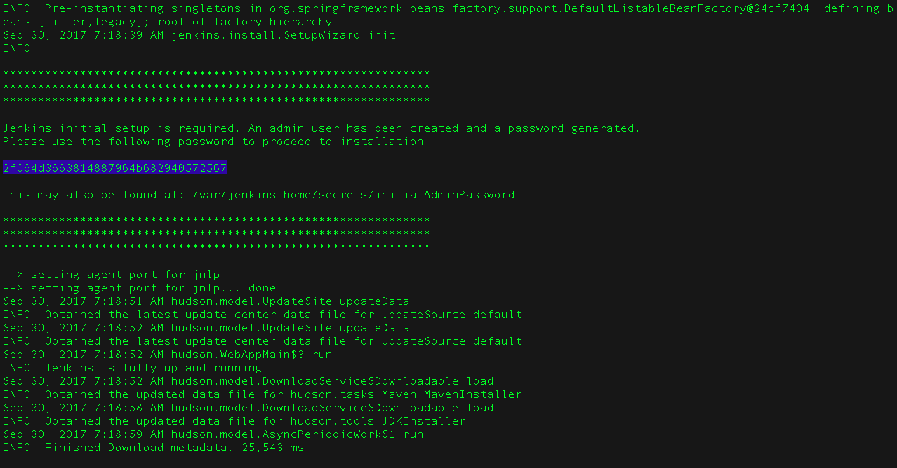

如果您要在基于Linux的操作系统上安装Docker，请确保配置Docker，以便它可以作为非root用户进行管理。 在Docker的Post-installation steps for Linux网页中了解更多关于它 的文档。 如何将Docker配置为默认启动的方式也可在此文档中查找。
安装Jenkins
Table of Contents
本节的步骤适用于单个/本地机器上的Jenkins新安装。
Jenkins通常作为一个独立的应用程序在其自己的流程中运行， 内置Java servlet 容器/应用程序服务器（Jetty）。
Jenkins也可以运行在不同的Java servlet容器(（如Apache Tomcat 或 GlassFish）)中作为servlet运行.但是设置这些类型的安装的说明超出了本页的范围
*注意:*尽管此页面重点关注Jenkins的本地安装，但此内容也可用于帮助在生产环境中设置Jenkins。
系统要求
最低推荐配置:
-
256MB可用内存
-
1GB可用磁盘空间(作为一个Docker容器运行jenkins的话推荐10GB)
为小团队推荐的硬件配置:
-
1GB+可用内存
-
50 GB+ 可用磁盘空间
软件配置:
-
Java 8—无论是Java运行时环境（JRE）还是Java开发工具包（JDK）都可以。
注意: 如果将Jenkins作为Docker 容器运行，这不是必需的
安装平台
本节介绍如何在不同的平台和操作系统上安装/运行Jenkins。
Docker
Docker是一个在称为“容器”（或Docker容器）的孤立环境中可运行应用程序的平台。 像Jenkins这样的应用程序可以作为只读的“镜像”（或Docker镜像）下载， 每个镜像都作为容器在Docker中运行。Docker容器实际上是Docker镜像的“运行实例”。 从这个角度来看，镜像永久存储（只要镜像更新发布），而容器暂时存储。 在Docker文档的入门指南，Getting Started, Part 1: Orientation and setup页面中阅读有关这些概念的更多信息 。
Docker的基础平台和容器设计意味着可以在任何支持的操作系统（macOS，Linux和Windows） 或云服务（AWS和Azure）上运行单个Docker镜像（对于任何给定的应用程序，如Jenkins）。
安装Docker
要在您的操作系统上安装Docker，请访问 Docker store网站并单击适用于您的操作系统或云服务的*Docker Community Edition*框。 按照其网站上的安装说明进行操作。
Jenkins也可以在Docker企业版上运行，您可以通过 Docker商店网站上的*Docker EE*访问它。
[ CAUTION]
在Docker中下载并运行Jenkins
几个可用的Jenkins Docker镜像.
建议使用的Docker映像是jenkinsci/blueocean image(来自 the Docker Hub repository)。
该镜像包含当前的长期支持 (LTS) 的Jenkins版本 （可以投入使用）
，捆绑了所有Blue Ocean插件和功能。这意味着你不需要单独安装Blue Ocean插件。
|
jenkinsci/blueocean每次发布Blue Ocean新版本时，都会发布新镜像。您可以在标签 page页上看到以前发布的镜像版本列表 。 您还可以使用其他Jenkins Docker镜像（在Docker Hub上可通过 |
在macOS和Linux上
-
打开一个终端窗口。
-
下载
jenkinsci/blueocean镜像并使用以下docker run 命令将其作为Docker中的容器运行 ：docker run \ -u root \ --rm \ (1) -d \ (2) -p 8080:8080 \ (3) -p 50000:50000 \ (4) -v jenkins-data:/var/jenkins_home \ (5) -v /var/run/docker.sock:/var/run/docker.sock \ (6) jenkinsci/blueocean (7)1 （可选） jenkinsci/blueocean关闭时自动删除Docker容器（下图为实例）。如果您需要退出Jenkins，这可以保持整洁。2 （可选） jenkinsci/blueocean在后台运行容器（即“分离”模式）并输出容器ID。如果您不指定此选项， 则在终端窗口中输出正在运行的此容器的Docker日志。3 映射（例如“发布”） jenkinsci/blueocean容器的端口8080到主机上的端口8080。 第一个数字代表主机上的端口，而最后一个代表容器的端口。因此，如果您为此选项指定-p 49000:8080，您将通过端口49000访问主机上的Jenkins。4 （可选）将 jenkinsci/blueocean容器的端口50000 映射到主机上的端口50000。 如果您在其他机器上设置了一个或多个基于JNLP的Jenkins代理程序，而这些代理程序又与jenkinsci/blueocean容器交互（充当“主”Jenkins服务器，或者简称为“Jenkins主”）， 则这是必需的。默认情况下，基于JNLP的Jenkins代理通过TCP端口50000与Jenkins主站进行通信。 您可以通过“ 配置全局安全性” 页面更改Jenkins主服务器上的端口号。如果您要将您的Jenkins主机的JNLP代理端口的TCP端口 值更改为51000（例如），那么您需要重新运行Jenkins（通过此 docker run …命令）并指定此“发布”选项 -p 52000:51000，其中最后一个值与Jenkins master上的这个更改值相匹配，第一个值是Jenkins主机的主机上的端口号， 通过它，基于JNLP的Jenkins代理与Jenkins主机进行通信 - 例如52000。5 （可选，但强烈建议）映射在容器中的`/var/jenkins_home` 目录到具有名字 jenkins-data的volume。 如果这个卷不存在，那么这个docker run命令会自动为你创建卷。 如果您希望每次重新启动Jenkins（通过此docker run ...命令）时保持Jenkins状态，则此选项是必需的 。 如果你没有指定这个选项，那么在每次重新启动后，Jenkins将有效地重置为新的实例。
注意: 所述的jenkins-data卷也可以docker volume create命令创建：docker volume create jenkins-data代替映射/var/jenkins_home目录转换为Docker卷，还 可以将此目录映射到计算机本地文件系统上的目录。 例如，指定该选项-v $HOME/jenkins:/var/jenkins_home会将容器的/var/jenkins_home目录映射 到 本地计算机上目录中的jenkins子目录， 该$HOME目录通常是/Users/<your-username>/jenkins或`/home/<your-username>/jenkins` 。6 （可选 /var/run/docker.sock表示Docker守护程序通过其监听的基于Unix的套接字。 该映射允许jenkinsci/blueocean容器与Docker守护进程通信， 如果jenkinsci/blueocean容器需要实例化其他Docker容器，则该守护进程是必需的。 如果运行声明式管道，其语法包含agent部分用docker-
例如，
agent { docker { ... } }此选项是必需的。 在Pipeline Syntax 页面上阅读更多关于这个的信息 。
7 jenkinsci/blueoceanDocker镜像本身。如果此镜像尚未下载，则此docker run命令 将自动为您下载镜像。此外，如果自上次运行此命令后发布了此镜像的任何更新， 则再次运行此命令将自动为您下载这些已发布的镜像更新。 注意：这个Docker镜像也可以使用以下docker pull命令独立下载（或更新） ：docker pull jenkinsci/blueocean注意: 如果复制并粘贴上面的命令片段不起作用，请尝试在此处复制并粘贴此无注释版本：docker run \ -u root \ --rm \ -d \ -p 8080:8080 \ -p 50000:50000 \ -v jenkins-data:/var/jenkins_home \ -v /var/run/docker.sock:/var/run/docker.sock \ jenkinsci/blueocean -
在Windows上
-
打开命令提示符窗口。
-
下载
jenkinsci/blueocean镜像并使用以下docker run命令将其作为Docker中的容器运行 ：docker run ^ -u root ^ --rm ^ -d ^ -p 8080:8080 ^ -p 50000:50000 ^ -v jenkins-data:/var/jenkins_home ^ -v /var/run/docker.sock:/var/run/docker.sock ^ jenkinsci/blueocean有关这些选项的解释，请参阅上面的在macOS和Linux上。
访问Jenkins / Blue Ocean Docker容器
如果您对Docker有一些经验，并且您希望或需要 jenkinsci/blueocean 通过
命令提示符通过终端/命令提示符访问docker exec
，则可以添加一个选项 --name jenkins-blueocean（如
docker run
所述）,这会为 jenkinsci/blueocean
容器命名为 "jenkins-blueocean" 。
这意味着你可以使用如下命令访问容器（通过单独的终端/命令提示符窗口） ：
docker exec -it jenkins-blueocean bash
通过Docker日志访问Jenkins控制台日志
您可能需要访问Jenkins控制台日志。例如，在解锁 Jenkins 作为安装后设置向导的一部分时。
如果没有指定分离模式选项 -d 与 docker run ... 命令以上，
那么Jenkins控制台日志是通过终端方便/命令从中运行此Docker命令提示符窗口。
否则，您可以通过访问Jenkins控制台日志
Docker logs中
的 jenkinsci/blueocean ，使用以下命令：
docker logs <docker-container-name>
Your <docker-container-name> can be obtained using the
docker ps
command. If you specified the
--name jenkins-blueocean option in the docker run ... command above (see
also
Accessing the Jenkins/Blue
Ocean Docker container), you can simply use the docker logs command:
您的 <docker-container-name> 可以使用docker ps
命令获得 。如果您在上述 docker run ...`命令中指定了 `--name jenkins-blueocean
参数(请参阅访问Jenkins/Blue Ocean Docker容器)
，则只需使用以下 docker logs 命令：
docker logs jenkins-blueocean
访问Jenkins主目录
例如，您可能需要访问Jenkins主目录，以查看 workspace 子目录中Jenkins版本的详细信息。
如果您将Jenkins主目录（ /var/jenkins_home ）映射到您计算机
本地文件系统上的一个目录（如上面的 docker run ... 命令 ），
那么您可以通过计算机常用的终端/命令提示符访问此目录的内容。
否则，如果您在 docker run ... 命令里指定了 -v jenkins-data:/var/jenkins_home 选项，
则可以 jenkinsci/blueocean 使用以下 docker exec
命令通过容器的终端/命令提示符访问Jenkins主目录的内容：
docker exec -it <docker-container-name> bash
如上面所提到，
您的 <docker-container-name> 可以使用来获得 docker ps
命令。如果您在 docker run ... 中指定了 --name jenkins-blueocean 该选项(也可参照
访问Jenkins / Blue Ocean Docker容器))，
则只需使用以下 docker exec 命令：
docker exec -it jenkins-blueocean bash
WAR文件
Jenkins的Web应用程序ARchive（WAR）文件版本可以安装在任何支持Java的操作系统或平台上。
要下载并运行Jenkins的WAR文件版本，请执行以下操作:
-
将最新的稳定Jenkins WAR包 下载到您计算机上的相应目录。
-
在下载的目录内打开一个终端/命令提示符窗口到。
-
运行命令java -jar jenkins.war
-
浏览http://localhost:8080并等到*Unlock Jenkins*页面出现。
-
继续使用Post-installation setup wizard后面步骤设置向导。
将最新的稳定Jenkins WAR包下载到您计算机上的相应目录。
Notes:
-
不像在Docker中下载和运行有Blue Ocean的Jenkins，这个过程不会自动安装Blue Ocean功能， 这将分别需要在jenkins上通过 Manage Jenkins > Manage Plugins安装。 在Getting started with Blue Ocean有关于安装Blue Ocean的详细信息 。.
-
您可以通过`--httpPort`在运行`java -jar jenkins.war`命令时指定选项来更改端口。例如，要通过端口9090访问Jenkins，请使用以下命令运行Jenkins：
java -jar jenkins.war --httpPort=9090
苹果系统
从网站安装的话使用这个包:
-
打开包装并按照说明操作
Jenkins 也可以使用`brew`以下方式安装：
-
安装最新版本
brew install jenkins
-
安装 LTS 版本
brew install jenkins-lts
Linux
Debian/Ubuntu
在基于Debian的发行版（如Ubuntu）上，您可通过`apt`安装Jenkins
在an apt repository可获得最新版本，较老但稳定的LTS版本在this apt repository这里可获得
wget -q -O - https://pkg.jenkins.io/debian/jenkins.io.key | sudo apt-key add -
sudo sh -c 'echo deb http://pkg.jenkins.io/debian-stable binary/ > /etc/apt/sources.list.d/jenkins.list'
sudo apt-get update
sudo apt-get install jenkins安装这个软件包将会：
-
将Jenkins设置为启动时启动的守护进程。查看`/etc/init.d/jenkins`获取更多细节
-
创建一个'
jenkins'用户来运行此服务 -
直接将控制台日志输出到文件`/var/log/jenkins/jenkins.log`。如果您正在解决Jenkins问题，请检查此文件
-
/etc/default/jenkins`为启动填充配置参数，例如JENKINS_HOME
-
将Jenkins设置为在端口8080上进行监听。使用浏览器访问此端口以开始配置
|
如果你的`/etc/init.d/jenkins`文件无法启动Jenkins，编辑`/etc/default/jenkins`，
修改 |
其他操作系统
OpenIndiana Hipster
在运行OpenIndiana Hipster的系统上 ， 可以使用Image Packaging System (IPS)将Jenkins安装在本地或全局区域中 。
|
免责声明：这个平台不是由Jenkins团队正式支持的，使用它需要您自担风险。 本节中描述的打包和集成由OpenIndiana Hipster团队维护，捆绑通用的`jenkins.war` 到该操作环境中工作。 |
对于运行每周最新的版本包作为独立服务器这种常见情景，只需执行：
pkg install jenkins
svcadm enable jenkins上面命令将会发生：
-
创建一个`jenkins`用户来运行该服务并拥有其下的目录结构`/var/lib/jenkins`
-
Pull the OpenJDK8 and other packages required to execute Jenkins, including the
jenkins-core-weeklypackage with the latestjenkins.war长期支持（LTS）的Jenkins版本目前不支持基于OpenZFS的系统，因此目前没有提供包安装 -
将Jenkins设置为SMF服务实例（
svc:/network/http:jenkins），然后可以使用上面的`svcadm`命令启用它。 -
设置Jenkins监听8080端口。
-
配置log输出文件`/var/svc/log/network-http:jenkins.log`,由SMF管理.
一旦jenkins运行，看log(/var/svc/log/network-http:jenkins.log)， 一般在
`/var/lib/jenkins/home/secrets/initialAdminPassword`里可以获取jenkins初始化的管理员密码.
然后进入localhost:8080 to complete configuration of the
Jenkins instance来完成Jenkins实例的配置。
Jenkins instance>>.
要更改服务的属性（如环境变量JENKINS_HOME 或用于Jetty Web服务器的端口号），请使用`svccfg`：
svccfg -s svc:/network/http:jenkins editprop
svcadm refresh svc:/network/http:jenkins您还可以参考`/lib/svc/manifest/network/jenkins-standalone.xml` 获取有关当前支持的SMF服务可调参数的更多详细信息和评论。 请注意，由packaging创建的`jenkins`用户帐户有特殊的特权，允许绑定1024以下的端口号。
可用于OpenIndiana特定版本的Jenkins相关软件包的当前状态可以通过查询：
pkg info -r '*jenkins*'升级包可以通过更新整个操作环境来执行`pkg update`，或者专门针对Jenkins核心软件进行更新：
pkg update jenkins-core-weekly|
更新软件包的过程将重新启动当前运行的Jenkins进程。 如果确定需要更新，请确保在更新之前准备好关闭并完成所有正在运行的作业 |
Solaris, OmniOS, SmartOS, and other siblings
一般来说，应该满足：安装Java 8和download jenkins.war， 并运行它作为一个独立的进程或应用服务器，比如Apache Tomcat。
一些注意事项:
-
Headless JVM and fonts: For OpenJDK builds on minimalized-footprint systems, there may be issues running the headless JVM, because Jenkins needs some fonts to render certain pages. Headless模式JVM和字体：为了OpenJDK构建在占用空间最小的系统上， 请看链接issues running the headless JVM， 因为Jenkins需要一些字体来渲染某些页面。
-
ZFS相关的JVM崩溃:当Jenkins在`SunOS`系统上运行时，它会通过使用bundled`libzfs.jar`映射从Java到主机操作系统提供的`libzfs.so`尝试加载集成高级ZFS功能。 不幸的是，该库是为了在操作系统中构建和捆绑的二进制实用程序，同时与它一起制作， 并不是作为一个稳定界面显示给消费者的。作为Solaris遗留的分支， 包括ZFS以及随后的OpenZFS计划的发展，许多不同的二进制功能签名由不同的主机操作系统提供。 当Jenkins`libzfs.jar`调用错误的签名时，整个JVM进程崩溃`jenkins.war`自从发布2.55（至今尚未在任何LTS中）以来，提出并整合了一个解决方案。 使管理员能够配置哪些功能签名应该用于已知具有不同变体的每个功能， 将其应用于其应用程序服务器初始化选项，然后运行和更新通用而不需要进一步的解决方法。 有关更多详细信息，请参阅 the libzfs4j Git repository， 包括尝试使用脚本并“锁定”您特定分发所需的配置（特别是如果您的内核更新带来新的不兼容`libzfs.so`）。
另外请注意，OpenZFS计划的分支可能会在各种BSD，Linux和macOS发行版上提供ZFS。 一旦Jenkins支持检测ZFS功能，而不是依赖于SunOS检查，则应考虑上述与Jenkins集成ZFS的注意事项。
安装后设置向导
下载安装并运行Jenkins后，即将开始进入安装向导。
此安装向导会引导您完成几个快速“一次性”步骤来解锁Jenkins， 使用插件对其进行自定义，并创建第一个可以继续访问Jenkins的管理员用户。
解锁 Jenkins
当您第一次访问新的Jenkins实例时，系统会要求您使用自动生成的密码对其进行解锁。
-
浏览到
http://localhost:8080（或安装时为Jenkins配置的任何端口），并等待 解锁 Jenkins 页面出现。

-
从Jenkins控制台日志输出中，复制自动生成的字母数字密码（在两组星号之间）。

-
在 解锁Jenkins 页面上，将此 密码 粘贴到管理员密码字段中，然后单击 继续 。
Notes:
-
如果您以分离模式在Docker中运行Jenkins，则可以从Docker日志（above） 访问Jenkins控制台日志。
-
Jenkins控制台日志显示可以获取密码的位置（在Jenkins主目录中）。 必须在新Jenkins安装中的安装向导中输入此密码才能访问Jenkins的主UI。 如果您在设置向导中跳过了后续的用户创建步骤， 则此密码还可用作默认admininstrator帐户的密码（使用用户名“admin”）
自定义jenkins插件
解锁 Jenkins之后，在 Customize Jenkins 页面内， 您可以安装任何数量的有用插件作为您初始步骤的一部分。
两个选项可以设置:
-
安装建议的插件 - 安装推荐的一组插件，这些插件基于最常见的用例.
-
选择要安装的插件 - 选择安装的插件集。当你第一次访问插件选择页面时，默认选择建议的插件。
| 如果您不确定需要哪些插件，请选择 安装建议的插件 。 您可以通过Jenkins中的Manage Jenkins > Manage Plugins 页面在稍后的时间点安装（或删除）其他Jenkins插件 。 |
设置向导显示正在配置的Jenkins的进程以及您正在安装的所选Jenkins插件集。这个过程可能需要几分钟的时间
创建第一个管理员用户
最后，在customizing Jenkins with plugins之后，Jenkins要求您创建第一个管理员用户。 . 出现“ 创建第一个管理员用户 ”页面时， 请在各个字段中指定管理员用户的详细信息，然后单击 保存完成 。 . 当 Jenkins准备好了 出现时，单击*开始使用 Jenkins*。
Notes: * 这个页面可能显示 Jenkins几乎准备好了! 相反，如果是这样，请单击 重启 。 * 如果该页面在一分钟后不会自动刷新，请使用Web浏览器手动刷新页面。如果需要，请使用您刚刚创建的用户的凭据登录到Jenkins，并准备好开始使用Jenkins！
| 从这时起，Jenkins用户界面只能通过提供有效的用户名和密码凭证来访问。 |